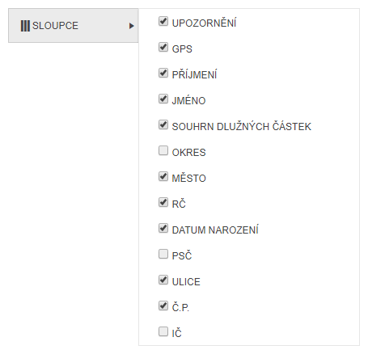

Skrytí / zobrazení sloupců
Uživatel si může v seznamu skrýt sloupce, které nepotřebuje pro svou práci.

Stačí vybrat v menu položku Sloupce a zde odškrtnout požadované názvy.
Opětovným zaškrtnutím se sloupec opět v seznamu zobrazí.
Pokud uživatel toto nastavení neuloží, bude toto nastavení pouze dočasné. Dočasné skrytí znamená, že si uživatel skryje sloupce, ale při překliknutí na jinou záložku se toto nastavení zruší a seznam bude v původní podobě.